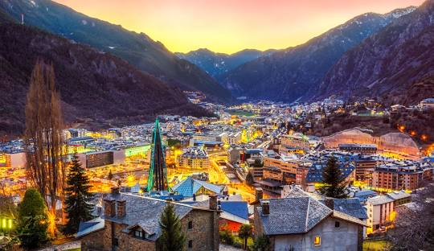

Pràctica amb l'etiqueta style
Andorra
Benvinguts a Andorra el lloc de la neu
Que puc fer a Andorra.
Andorra és una destinació ideal per gaudir de la natura, l'esport i les compres. Aquí tens algunes de les millors activitats que pots fer en aquest petit país dels Pirineus:
1. Esquiar i fer surf de neu : Andorra compta amb estacions d´esquí com Grandvalira i Vallnord, perfectes per als aficionats als esports d´hivern.
2. Senderisme i rutes a la muntanya : Durant l'estiu, podeu explorar rutes com la Vall de Madriu-Perafita-Claror (Patrimoni de la Humanitat) o pujar a cims com el Comapedrosa.
3. Visitar Caldea : Aquest famós spa termal és ideal per relaxar-vos en aigües termals després d'un dia ple d'aventures.
4. Anar de compres : Andorra és un paradís per als amants del shopping, amb botigues a Andorra la Vella i Escaldes-Engordany que ofereixen productes a preus més baixos que a altres països.
5. Explorar els pobles amb encant : Ordino, Canillo i Pal són alguns dels pobles més bonics, amb cases de pedra i paisatges impressionants.
6. Practicar esports d'aventura : Pots gaudir d'activitats com ara tirolina a Naturland, rutes amb bicicleta de muntanya o fins i tot parapent.
7. Descobrir la seva gastronomia : No us podeu perdre plats típics com l'escudella, el trinxat o les carns a la brasa en una borda tradicional.
8. Visitar esglésies romàniques : Andorra té un ric patrimoni cultural amb esglésies com Sant Joan de Caselles o Santa Coloma, que tenen frescos medievals.

Pots modificar els estils al document i veure els canvis al navegador!